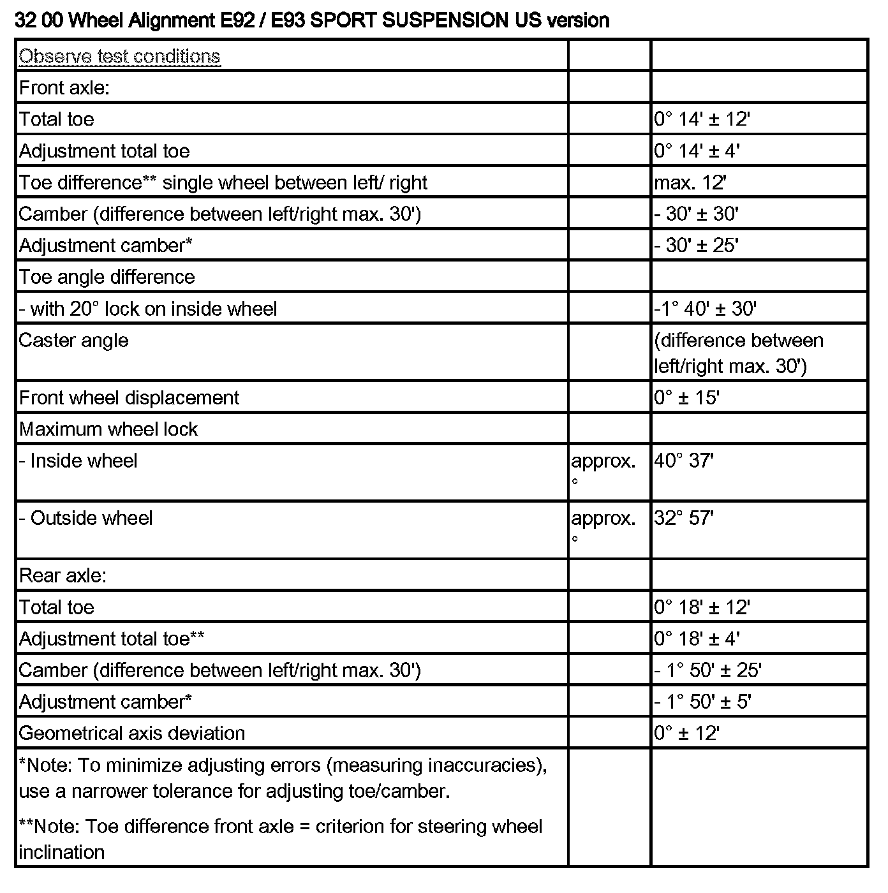

Operation CHARM
: Car repair manuals for everyone.
Home
>>
BMW
>>
2013
>>
335i Convertible (E93) L6-3.0L Turbo (N55)
>>
Repair and Diagnosis
>>
Maintenance
>>
Alignment
>>
Specifications
>>
32 00 Wheel Alignment
>>
E92, E93 / Sport Suspension US version
E92, E93 / Sport Suspension US version
